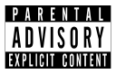

La configuration du contrôle d'accès - mise en place par Microlinux - a rejeté votre requête pour visiter ce site. Il peut y avoir plusieurs raisons à cela.

Le site que vous essayez d'afficher est tout bonnement interdit pour tout le monde : contenus adultes, sites incitant à la haine, manuels pour cultivateurs de drogues, sites malveillants ou frauduleux, etc.
Vous essayez d'accéder à un site au contenu bénin mais récréatif
(réseaux sociaux, sites de streaming, etc.) à une heure où vous êtes censé
travailler. Dans ce cas, revenez plus tard.
L'accès à certains sites est réservé aux utilisateurs privilégiés de l'établissement (direction, enseignants, etc.) et interdit aux autres (étudiants, élèves).
Le serveur bannit automatiquement les sites web qui constituent un danger potentiel pour votre ordinateur : publicités gourmandes en ressources, tentatives de phishing, malwares, cryptojacking, etc.
En cas de litige, notamment si le dispositif de filtrage vous interdit l'accès à un domaine dont le contenu ne devrait pas poser de problème, contactez le responsable de votre réseau.

Pour info, voici l'extrait correspondant du Code Pénal, article 227-24 :
Le fait soit de fabriquer, de transporter, de diffuser par quelque
moyen que ce soit et quel qu'en soit le support un message à caractère
violent ou pornographique ou de nature à porter gravement atteinte à la
dignité humaine, soit de faire commerce d'un tel message, est puni de trois
ans d'emprisonnement et de 75000 euros d'amende lorsque ce message est
susceptible d'être vu ou perçu par un mineur.
Lorsque les infractions prévues au présent article sont soumises par
la voie de la presse écrite ou audiovisuelle ou de la communication au
public en ligne, les dispositions particulières des lois qui régissent ces
matières sont applicables en ce qui concerne la détermination des personnes
responsables.